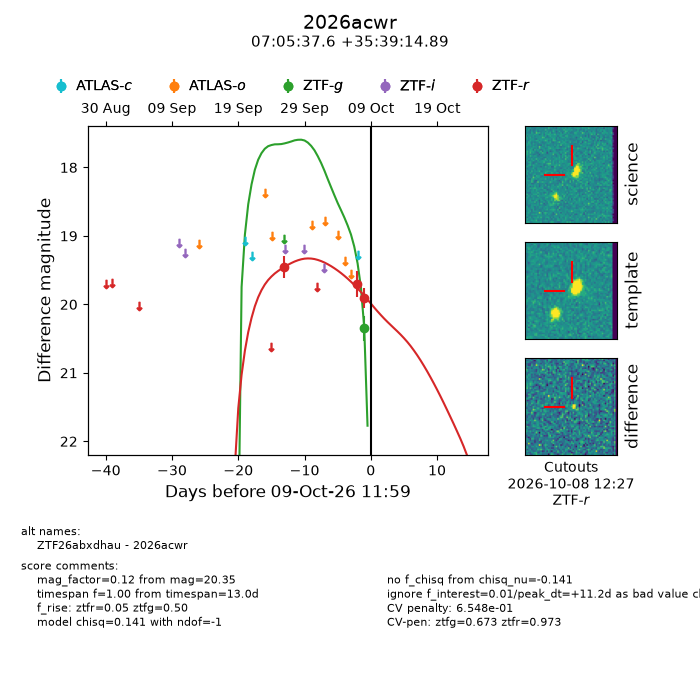
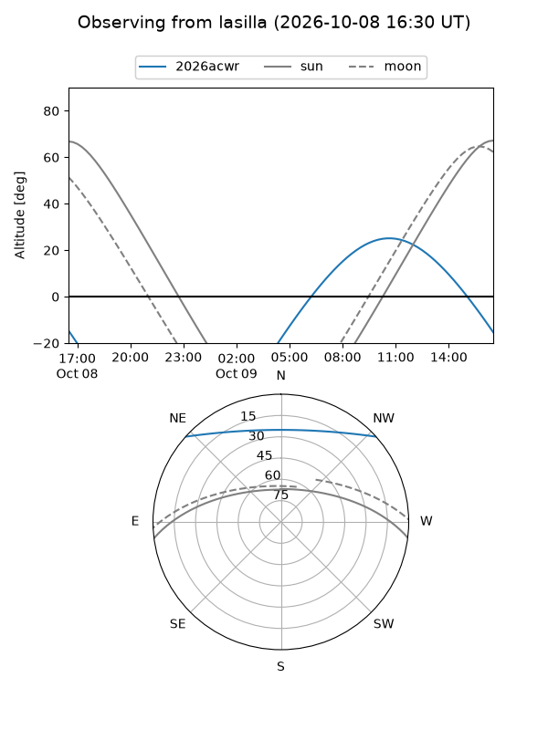
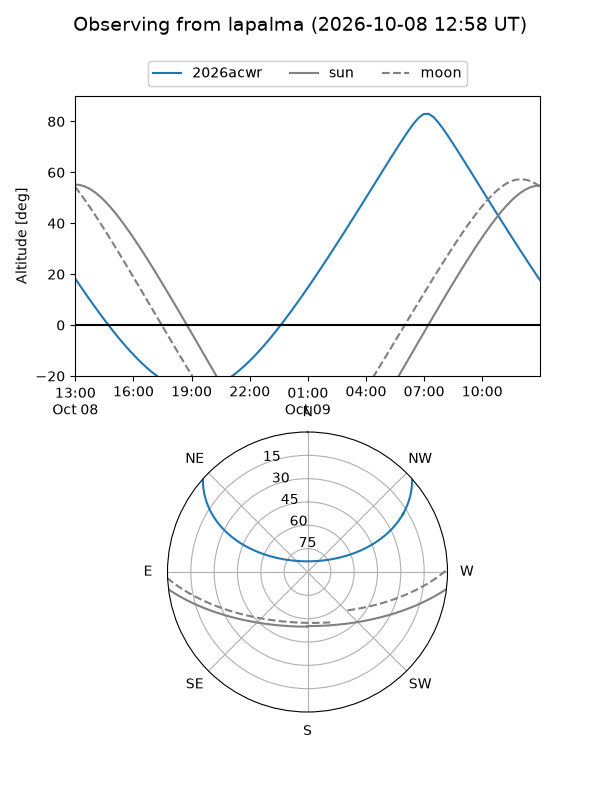
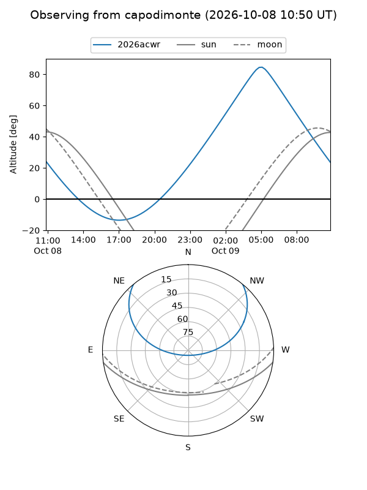
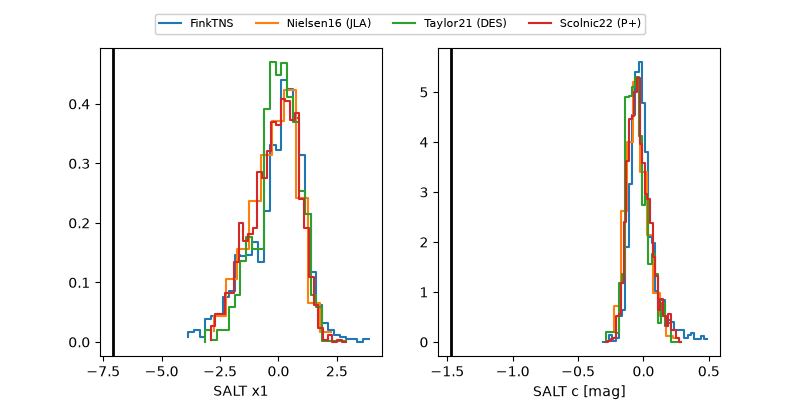

2026acwr
Target 2026acwr at 2026-10-09 12:01
Aliases and brokers:
FINK-ZTF: ztf.fink-portal.org/ZTF26abxdhau
Lasair-ZTF: lasair-ztf.lsst.ac.uk/objects/ZTF26abxdhau
ALeRCE-ZTF: alerce.online/object/ZTF26abxdhau
YSE-PZ: ziggy.ucolick.org/yse/transient_detail/2026acwr
TNS name: wis-tns.org/object/2026acwr
Direct TNS query: direct search
alt names
ZTF26abxdhau (ztf,fink_ztf)
2026acwr (tns,yse)
Coordinates:
equatorial (ra, dec) = 106.4067,+35.65414
equatorial (HMS+DMS) = 07:05:37.60,+35:39:14.89
galactic (l, b) = (181.4903,+18.09125)
Flags:
peak dt: +11.2
likely cv: !!
Photometry:
last ztfg=20.35, ztfr=19.90
1 ztfg, 3 ztfr detections
Lightcurve

Visibility



Additional plots
